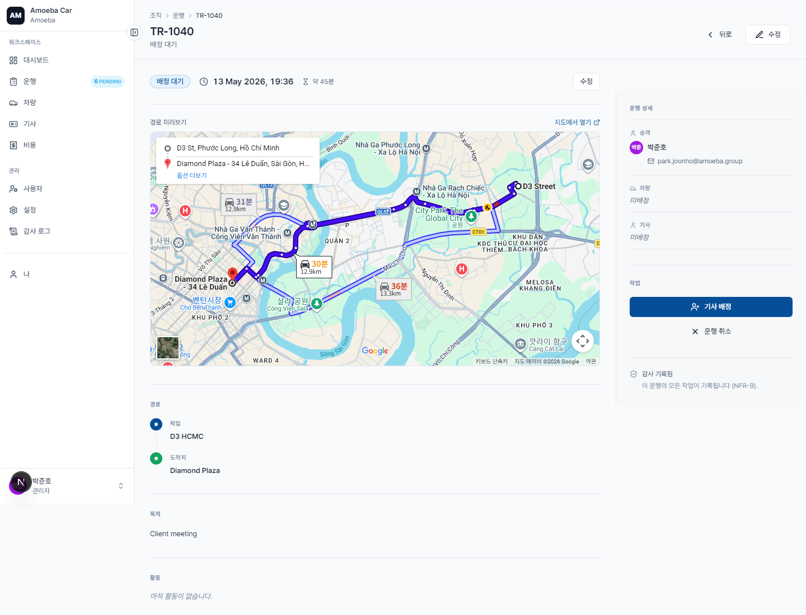
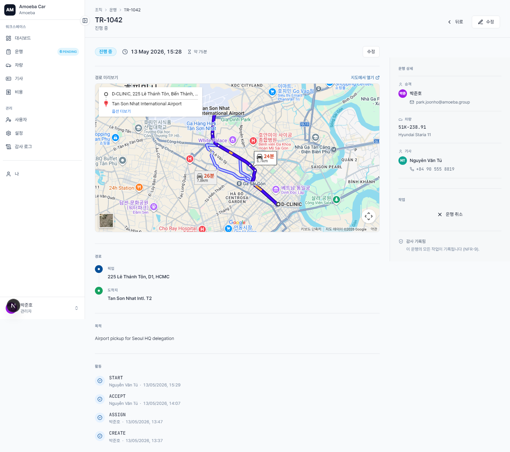

운행 관리 (Trips)
- URL
/trips·/trips/new·/trips/[id]- 관리자 권한
- 배정 대기 중인 운행에 기사·차량 배정 · 기사가 거절한 경우 재배정 · 모든 운행을 취소 가능
새 운행 생성
매니저와 동일한 방식으로 생성합니다 — 자세한 절차는 차량 신청 (매니저) 문서를 참고하세요. 필수 입력 항목: 출발지, 도착지, 출발 시각.
매니저와의 차이점: 관리자는 임의의 사용자를 승객으로 지정할 수 있으며, 본인 계정으로 제한되지 않습니다.
PENDING_ASSIGNMENT 상태의 운행에 기사·차량 배정

1
"배정 대기"(PENDING_ASSIGNMENT) 상태의 운행을 엽니다.
2
페이지 상단의 "Quick Actions" 영역에서 다음 항목을 선택합니다.
- 기사 — AVAILABLE 상태의 기사 목록 드롭다운
- 차량 — AVAILABLE 상태의 차량 드롭다운
3
"배정"을 클릭합니다. 운행이 PENDING_DRIVER_CONFIRMATION 상태로 전환되며, 기사에게 알림이 전송되고 기사가 확인을 진행해야 합니다.
운행 중 모니터링

IN_PROGRESS 상태의 상세 페이지에는 다음 정보가 표시됩니다.
- 경로 지도
- 승객 · 기사 · 차량 정보
- 활동 피드 — 누가 언제 CREATE, ASSIGN, ACCEPT, START 했는지 타임스탬프와 함께 표시
- 전체 감사 로그 페이지로 이동하는 감사 링크
운행 취소
- 관리자는 아직 완료되지 않은 모든 상태의 운행을 취소할 수 있습니다 (COMPLETED·CANCELLED·REJECTED 상태는 취소 불가).
- 하단의 "운행 취소" 버튼(빨간색)을 클릭한 뒤, 사유를 입력(필수)하고 확정합니다.
- 기사와 승객에게 알림이 전송됩니다.
기사 거절 시 재배정
기사가 사유와 함께 "거절"을 누르면 운행은 REJECTED_BY_DRIVER 상태로 전환됩니다. 관리자는 해당 운행을 다시 열어 "재배정"을 클릭하고 다른 기사를 선택합니다. 운행은 다시 PENDING_DRIVER_CONFIRMATION 상태로 돌아갑니다.
일정 충돌 소프트 경고
이미 ACTIVE 상태인 다른 운행과 겹치는 기사나 차량을 배정하면, 시스템이 경고를 표시하지만 진행을 막지는 않습니다 — 관리자는 충돌을 인지한 상태에서 저장할 권한을 가집니다. 해당 동작은 감사 로그에 TRIP.CONFLICT_OVERRIDDEN으로 기록됩니다.